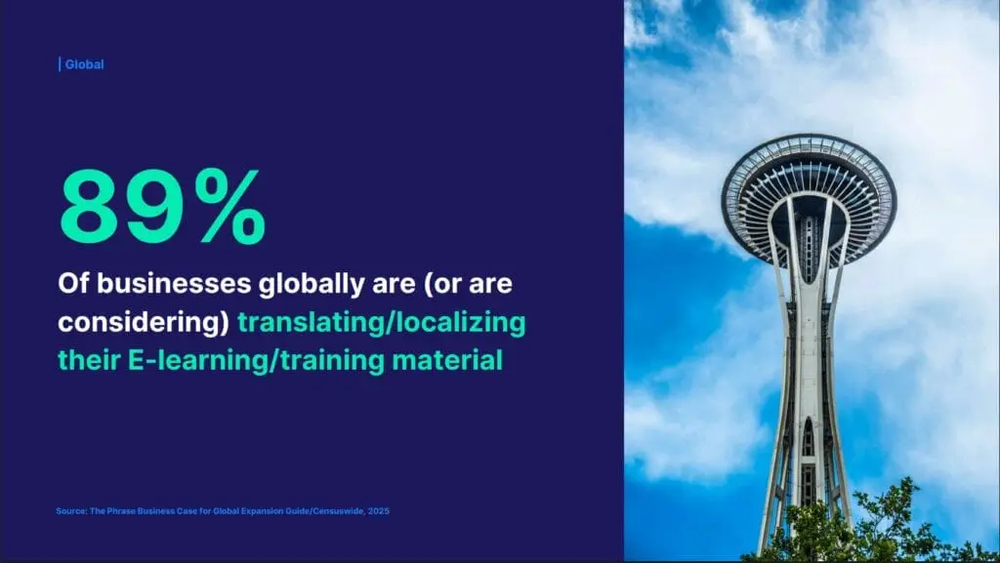

Definition
Training pages are part of the site’s entity graph: company, product, application, and the document that supports the claim. Learners trust the lesson they can finish. If the lesson and the product URL disagree, a later summary has two facts and no way to know which one you stand behind. Generative drafting of quiz text has the same risk as any other draft: numbers must be checked against the owner page.
Short answer
E-learning localization is successful when the course states the same product name and the same operating limit as the product page in that language. A cloud-hosted lesson that teaches a wider limit is a second specification, not a translation.

Fields that must say the same thing
Compare the course and the product page on company name, product name, specification, application, and the condition in the claim. Mark the buyer or learner question answered, partial, or uncovered. A video that shows the limit only on a slide, with no HTML sentence, leaves the page partial.
The issue on the page
Host the course where you like. The indexable page still needs a fetchable sentence. Link the lesson to the product URL in the same language with anchor text that names the product and the limit. Do not point every language at a single English video and call the market covered.
Signals that travel with the page
AI trend language does not add evidence. If you mention a drafting tool, say that a person still checks the specification. Hreflang relates the lesson URLs you publish. It does not rank the course.
A lesson is evidence only when it repeats the product fact instead of replacing it. Mika Visibility keeps one set of company, product, specification, and application facts in every language you publish, while the market’s own questions need real depth. English stays at the root. Chinese stays under /zh/. Do not add an /en/ prefix. Hreflang uses en, zh-Hans, and x-default pointing at the English URL. A health finding never becomes a growth score.
What to check
- Read the operating limit in the lesson and on the product URL.
- Put that limit in HTML, not only in a slide.
- Link the lesson to the product page in the same language.
- Check generated quiz text against the owner specification.
What this does not claim
Aligned training pages do not guarantee search rankings, course completions, or AI citations. Mika does not promise placement in any answer product.
A practical example
Teaching example, not a completion rate. An English product page says a cutter stops at a stated thickness. The localized lesson says the same cutter handles a thicker sheet. The repair edits the lesson HTML to the product limit, links the datasheet, and re-audits both URLs. No learner count is invented.
FAQ
When is localized e-learning consistent with the product?
E-learning localization is successful when the course states the same product name and the same operating limit as the product page in that language. A cloud-hosted lesson that teaches a wider limit is a second specification, not a translation.
Why can a lesson and a product page split one fact?
Training pages are part of the site’s entity graph: company, product, application, and the document that supports the claim. Learners trust the lesson they can finish. If the lesson and the product URL disagree, a later summary has two facts and no way to know which one you stand behind. Generative drafting of quiz text has the same risk as any other draft: numbers must be checked against the owner page.
Does cloud training localization guarantee citations?
Aligned training pages do not guarantee search rankings, course completions, or AI citations. Mika does not promise placement in any answer product.
Next step
Run a structured SEO + GEO audit to see health findings, growth gaps, and a blueprint you can act on.
Clearer entities, answers, evidence, and context make pages easier to understand and reference. Results in any answer product are not guaranteed.